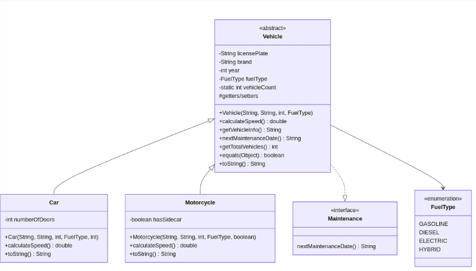

Ejercicio 3: Jerarquía de Vehículos
Enunciado
Implementa el siguiente diagrama de clases:

Solución Propuesta
Para esta solución, estructuraremos el código empezando por los tipos básicos (el enumerado y la interfaz), luego crearemos la clase abstracta principal y, por último, las clases concretas y el programa ejecutable.
1. Enumerado e Interfaz
Definimos los tipos de combustible disponibles y el contrato para el mantenimiento.
package Tema6.Ejercicios.ejercicio3;
public enum FuelType {
GASOLINE, DIESEL, ELECTRIC, HYBRID
}package Tema6.Ejercicios.ejercicio3;
public interface Maintenance {
String nextMaintenanceDate();
}2. Clase Abstracta Base (Vehicle)
Esta clase agrupa los atributos comunes, maneja un contador estático de vehículos instanciados y sobrescribe métodos de la clase Object como toString y equals.
package Tema6.Ejercicios.ejercicio3;
public abstract class Vehicle implements Maintenance {
private String licensePlate;
private String brand;
private int year;
private FuelType fuelType;
private static int vehicleCount = 0;
public Vehicle(String licensePlate, String brand, int year, FuelType fuelType) {
this.licensePlate = licensePlate;
this.brand = brand;
this.year = year;
this.fuelType = fuelType;
vehicleCount++;
}
// metodo abstracto
public abstract double calculateSpeed();
public String getVehicleInfo() {
return brand + " (" + licensePlate + ")";
}
// metodo para obtener el total
public static int getTotalVehicles() {
return vehicleCount;
}
// getters y setters
public String getLicensePlate() {
return licensePlate;
}
public String getBrand() {
return brand;
}
// sobreescribir
@Override
public String nextMaintenanceDate() {
return String.valueOf(year);
}
@Override
public String toString() {
return "Vehicle: " + brand + ", Plate: " + licensePlate;
}
@Override
public boolean equals(Object obj) {
if (this == obj)
return true;
else {
if (this.licensePlate.equals(((Vehicle) obj).licensePlate))
return true;
else
return false;
}
}
}3. Clases Derivadas (Car y Motorcycle)
Implementan los métodos abstractos de su clase padre y añaden sus atributos específicos (número de puertas o si tiene sidecar).
package Tema6.Ejercicios.ejercicio3;
public class Car extends Vehicle {
private int numberOfDoors;
public Car(String lp, String b, int y, FuelType ft, int doors) {
super(lp, b, y, ft);
this.numberOfDoors = doors;
}
@Override
public double calculateSpeed() {
return 120.0;
}
@Override
public String nextMaintenanceDate() {
return "2024-12-01";
}
@Override
public String toString() {
return super.toString() + ", Doors: " + numberOfDoors;
}
}package Tema6.Ejercicios.ejercicio3;
public class Motorcycle extends Vehicle {
private boolean hasSidecar;
public Motorcycle(String lp, String b, int y, FuelType ft, boolean sidecar) {
super(lp, b, y, ft);
this.hasSidecar = sidecar;
}
@Override
public double calculateSpeed() {
return 90.0;
}
@Override
public String nextMaintenanceDate() {
return "2024-10-15";
}
@Override
public String toString() {
return super.toString() + ", Has Sidecar: " + hasSidecar;
}
}4. Clase Principal (Main)
Probamos nuestro sistema creando una colección de vehículos, iterando sobre ellos y comprobando el contador estático total.
package Tema6.Ejercicios.ejercicio3;
import java.util.ArrayList;
public class Main {
public static void main(String[] args) {
// crear array
ArrayList numerovehiculos = new ArrayList<>();
// crear vehiculos
numerovehiculos.add(new Car("1111-AAA", "Seat", 2023, FuelType.DIESEL, 5));
numerovehiculos.add(new Motorcycle("2222-BBB", "Honda", 2024, FuelType.GASOLINE, true));
numerovehiculos.add(new Car("3333-CCC", "Toyota", 2025, FuelType.DIESEL, 5));
numerovehiculos.add(new Car("444-DDD)", "Nissan", 2023, FuelType.HYBRID, 5));
// recorrer el array
System.out.println("lista de vehiculos");
for (Vehicle v : numerovehiculos) {
System.out.println(v.getVehicleInfo());
}
// get total vehiculos
int total = Vehicle.getTotalVehicles();
System.out.println("Total de vehiculos: " + total);
}
}